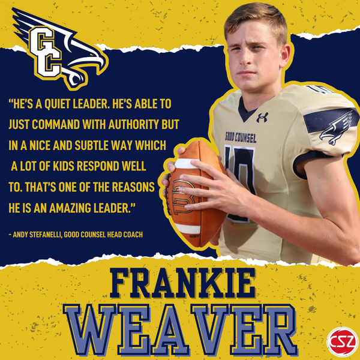
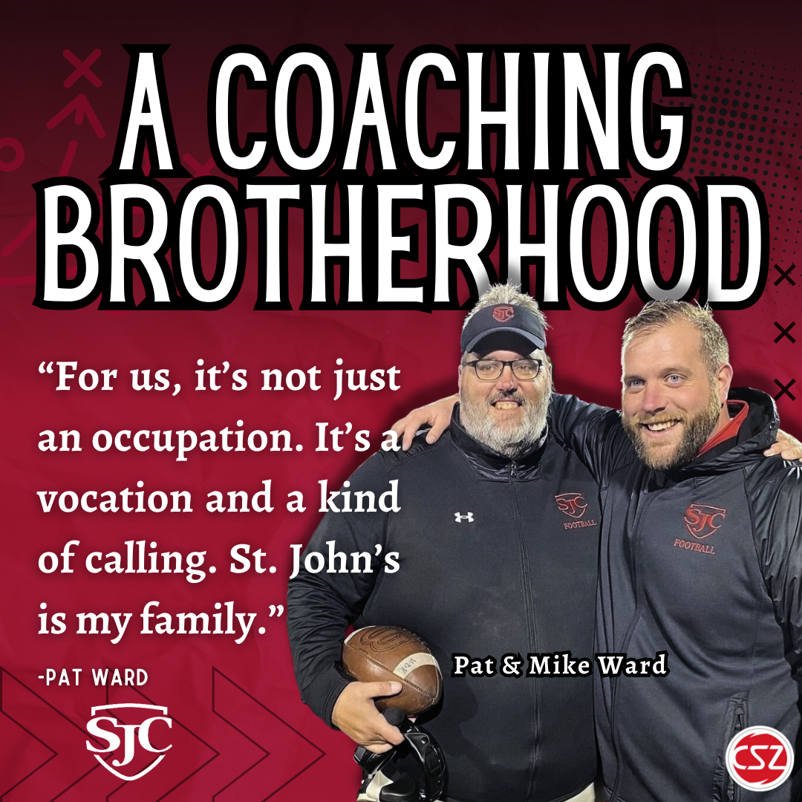
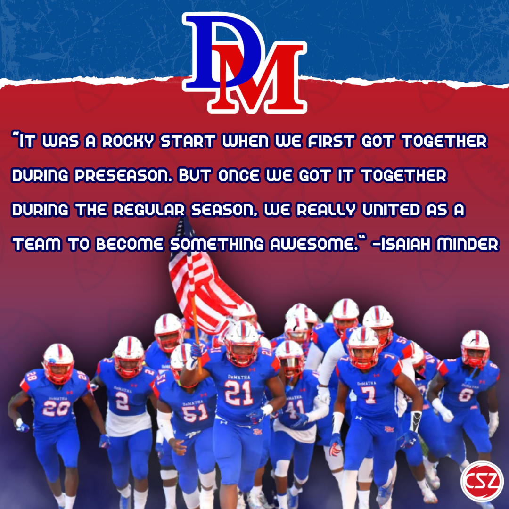
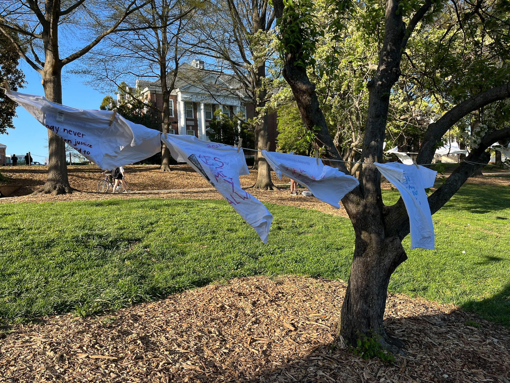
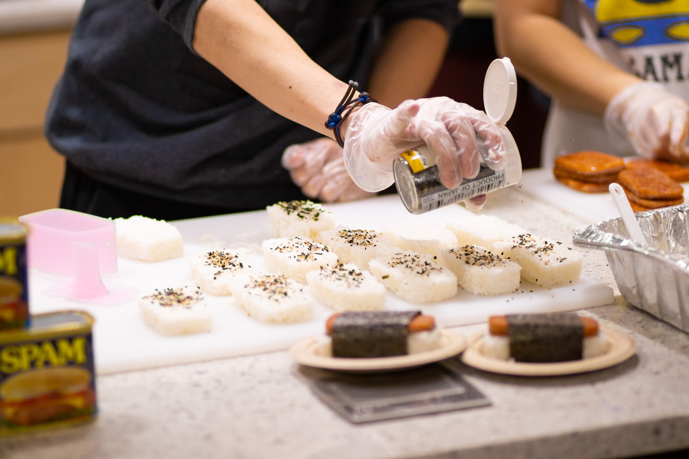
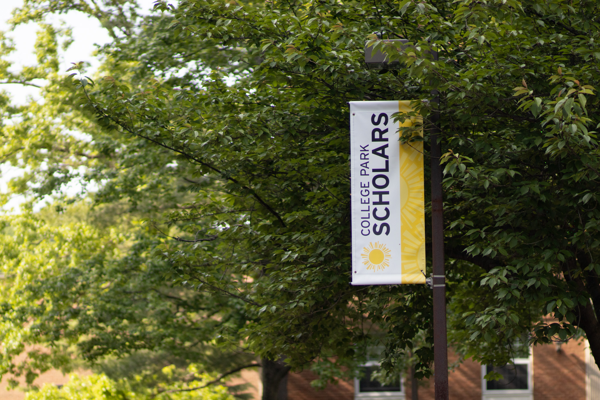

About Me
Resume
Clips
Contact
My Journalism Experience
Written Works

An Inside Look at Good Counsel QB, Frankie Weaver

A Coaching Brotherhood: Powering St.John's College Football

DeMatha Football Strives to Maintain Perfection in 2023

Sexual assault prevention advocates ‘Take Back the Night’ with the Clothesline Project

UMD students explore Asian American food and history with hands-on demo

UMD community reflects on science, discovery and the universe scholars program’s 25-year run
Video Works
A Sneak Peak of UMD's New Greg Heffley Statue!
UMD's Only Chinese Dance Crew Feature Story
An Inside Look at Two of UMD's Beloved Dance Professors